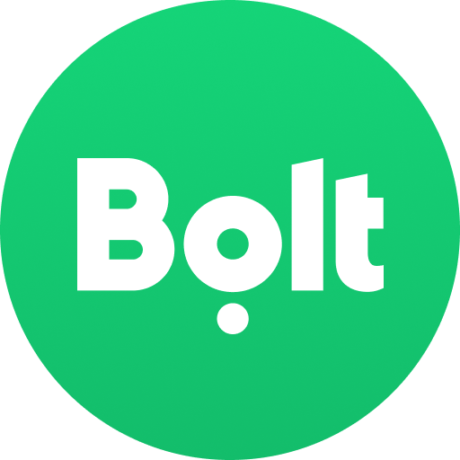

Bolt Driver - Part-Time

About the Role
Since 2023, I've worked as a part-time e-hailing driver for Bolt. This role has given me valuable experience in managing my own operations, providing excellent customer service, and developing financial discipline. What started as a way to earn extra income has become an opportunity to build real-world business skills.
Key Responsibilities
- Managed all aspects of a personal transportation service
- Tracked operational costs and optimized for profitability
- Maintained high customer satisfaction through professional service
- Navigated dynamic situations including traffic and route changes
- Balanced part-time work with full-time academic commitments
Skills Developed
- Financial planning and cost management
- Customer service and relationship building
- Real-time problem-solving
- Route optimization and navigation
- Time management and self-discipline
Key Achievements
- Maintained a consistent 4.9+ star rating
- Successfully balanced driving with full-time studies
- Developed financial literacy through business management
- Built strong customer relations skills
Reflection
Driving for Bolt has been more than just a job, it's been a practical education in business operations. I've learned how to manage costs and keep customers happy. These are skills I know will serve me well in any professional role I pursue.